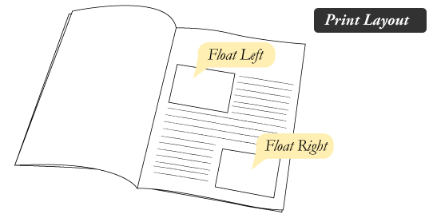
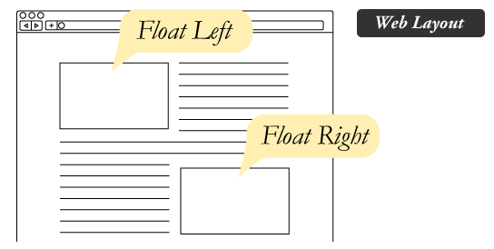
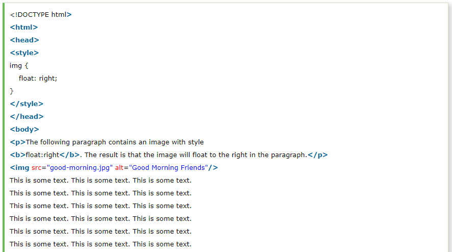
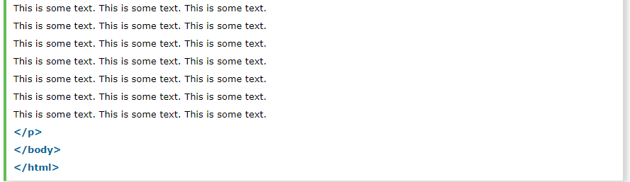

The CSS float property is a positioning property. It is used to push an element to the left or right, allowing other element to wrap around it. It is generally used with images and layouts
To understand its purpose and origin, let's take a look to its print display. In the print display, image is set into the page such that text wraps around it as needed.
Its web layout is also just similar to print layout.
Elements are floated only horizontally. So it is possible only to float elements left or right, not up or down.
Let's see a simple example to understand the CSS float property.
 